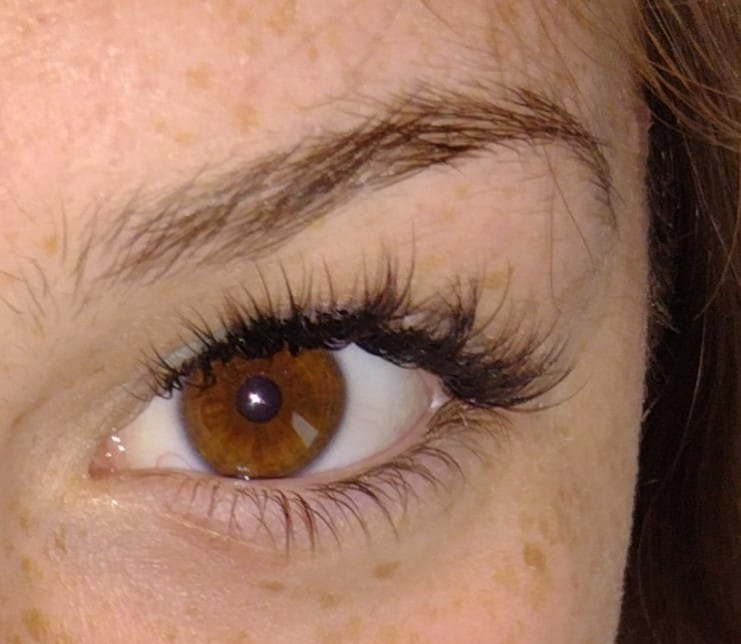

El nombre Iara proviene de la mitología brasileña. Iara es una sirena de agua dulce, guardiana de los ríos y símbolo de seducción, misterio y belleza natural.
Elegí este nombre porque siento que representa lo que quiero transmitir con mi trabajo: una mirada magnética, profunda, que hipnotiza como las aguas de un río.
Gaze, en inglés, significa “mirada”. Así, Iara.Gaze combina la fuerza de un mito ancestral con el poder de una mirada transformada.
Aquí algunos de mis trabajos:

📞 Escribinos a: +54 9 261 2442158
📸 Seguinos en Instagram